Para a equipe de desenvolvimento. Defeitos do módulo Principal encontrados nos testes de tela, com o passo a passo para reproduzir, as capturas, o trecho do código onde o problema está e uma sugestão de correção. Cada defeito traz também como confirmar a correção (o caso de teste a repetir). Atualizado em 10/10/2026.
Resumo
10 defeitos registrados, 10 em aberto. Pendentes por gravidade: 2 alta · 5 média · 3 baixa.
Gravidade: Alta = afeta a qualidade do produto, a conformidade com a ANVISA ou impede uma tarefa; Média = atrapalha, mas há como contornar; Baixa = incômodo ou texto.
Situação: Aberto: ainda não corrigido · Em correção: um desenvolvedor assumiu · Corrigido: o desenvolvedor entregou, falta o reteste · Validado: o reteste passou.
| Id | Defeito | Gravidade | Situação | Tela | Encontrado em |
|---|---|---|---|---|---|
| DV-PRI-009 | Exclusão de Ambiente e de Equipamento é gravada sem pedir justificativa | Alta | Aberto | Principal › Cadastros › Cadastro de Ambientes e Cadastro de Equipamentos › Excluir | CT-PRI-094 (Ambiente e Equipamento) e CT-PRI-080, 05/10/2026 |
| DV-PRI-014 | O histórico de um registro excluído não pode mais ser consultado pelas telas | Alta | Aberto | Principal › Cadastros › Cadastro de Ambientes (e demais cadastros) › Ver Log | CT-PRI-080, 05/10/2026 |
| DV-PRI-004 | Histórico do Profissional grava a alteração do Cargo sem o valor antigo e o novo, e registra o DDI como alterado sem mudança | Média | Aberto | Principal › Administração › Profissional (alteração) › Log Alteração | CT-PRI-044, 05/10/2026 |
| DV-PRI-006 | Profissional com conta de usuário e perfil é excluído sem aviso de dependência | Média | Aberto | Principal › Administração › Profissional › Excluir | CT-PRI-048, 05/10/2026 |
| DV-PRI-010 | Salvar um equipamento sem Categoria dá erro de servidor e a tela fica parada, sem mensagem | Média | Aberto | Principal › Cadastros › Cadastro de Equipamentos (inclusão) | CT-PRI-090 (Equipamento), 05/10/2026 |
| DV-PRI-011 | Exclusão recusada com mensagem genérica, sem dizer qual cadastro ou item impede | Média | Aberto | Principal › Cadastros › Cadastro de Ambientes (e Cadastro de Equipamentos) › Excluir | CT-PRI-095 (Ambiente) e CT-PRI-094 (Equipamento), 05/10/2026 |
| DV-PRI-013 | Alteração e inativação de Pessoa Jurídica gravam sem pedir justificativa | Média | Aberto | Principal › Cadastros › Pessoa Jurídica (alteração e inativação) › Log Alteração | CT-PRI-092 e CT-PRI-093 (Pessoa jurídica), 05/10/2026 |
| DV-PRI-007 | Cadastro de Ambientes aceita duas descrições iguais | Baixa | Aberto | Principal › Cadastros › Cadastro de Ambientes (inclusão) | CT-PRI-091 (Ambiente), 05/10/2026 |
| DV-PRI-008 | Pesquisa por nome não ignora acentos nos cadastros de Ambiente, Equipamento e Pessoa jurídica | Baixa | Aberto | Principal › Cadastros › Cadastro de Ambientes, Cadastro de Equipamentos e Pessoa Jurídica (pesquisa) | CT-PRI-096 (Ambiente, Equipamento e Pessoa jurídica), 05/10/2026 |
| DV-PRI-018 | Na tela inicial, o link do módulo Patrimônio aponta para o próprio servidor e não abre para o usuário | Baixa | Aberto | Principal › Tela inicial (lista de módulos) › Patrimônio | achado ao abrir os módulos (seção 6.2 do plano), 05/10/2026 |
DV-PRI-009
Exclusão de Ambiente e de Equipamento é gravada sem pedir justificativa
| Gravidade | Situação | Tela | Caso de teste | Encontrado em | Norma afetada |
|---|---|---|---|---|---|
| Alta | Aberto | Principal › Cadastros › Cadastro de Ambientes e Cadastro de Equipamentos › Excluir | CT-PRI-094 (Ambiente e Equipamento) e CT-PRI-080 | 05/10/2026 (rodada 1) | RDC 658/2022, art. 125 e parágrafo único (alteração assinada e datada; motivo registrado) e art. 124 (atividades rastreáveis) |
O que acontece
Ao excluir um ambiente ou um equipamento, o sistema pede só a confirmação "Confirma a exclusão do item?" e mostra "Exclusão realizada com sucesso!". Não há campo de justificativa. O registro vai para a lixeira, mas o motivo da exclusão não fica registrado. Nas outras telas do mesmo módulo a justificativa é exigida: na alteração de Ambiente e Equipamento e na exclusão de Profissional. A área decidiu que toda exclusão e alteração de cadastro deve exigir justificativa (RN-PRI-070).
Como reproduzir
- Entrar no módulo Principal e abrir Cadastros › Cadastro de Ambientes.
- Em Descrição, digitar
TESTE AMBIENTE EXCLUIRe clicar em PESQUISAR. - Clicar no ícone vermelho de excluir da linha.
- Na janela "Confirma a exclusão do item?", clicar em SIM.
- Repetir em Cadastros › Cadastro de Equipamentos com um equipamento TESTE sem itens vinculados.
Dados de teste usados: ambientes TESTE AMBIENTE EXCLUIR (código 16) e TESTE AMBIENTE AUDITORIA (CT-PRI-080), ambos excluídos; equipamento TESTE EQUIPAMENTO EXCLUIR (código 10), excluído no reteste da rodada 2.
Esperado e obtido
| Esperado | Obtido |
|---|---|
| Antes de excluir, pedir a justificativa (obrigatória, com a mensagem "A justificativa da exclusão é obrigatória!" se vazia), como já faz a exclusão de Profissional, e gravá-la no histórico junto com usuário, data e hora. | Só "Confirma a exclusão do item?" e "Exclusão realizada com sucesso!". Nenhum campo de justificativa; o histórico do registro não guarda motivo. |
Evidências
Figura 1: Ambiente TESTE AMBIENTE EXCLUIR na lista, antes de excluir
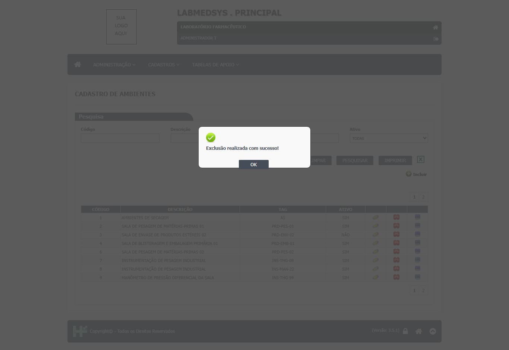
Figura 2: Depois de confirmar: "Exclusão realizada com sucesso!", sem ter pedido justificativa

Figura 3: Para comparar: a exclusão de Profissional tem o campo Justificativa obrigatório
Onde está no código
Causa (confirmada): nas listas de Ambiente e de Equipamento, o código antigo que pedia a justificativa está comentado; o método excluir() atual só passa o usuário e chama a regra. A gravação do histórico de exclusão (gerarLogExclusaoAmbiente / gerarLogExclusaoEquipamento) cria o item "EXCLUSÃO DO REGISTRO" sem preencher a justificativa. A tabela de histórico tem a coluna de justificativa, que fica vazia.
| Arquivo | Linhas | O que faz |
|---|---|---|
LaboSys_UI/administrativas/ambiente_lst.aspx.cs |
341-395 | Versão antiga da exclusão, com txtJustificativaExclusao, toda comentada. |
LaboSys_UI/administrativas/ambiente_lst.aspx.cs |
397-421 | excluir() atual: sem justificativa; só usuário e chamada a excluirAmbiente. |
LaboSys_UI/administrativas/equipamento_lst.aspx.cs |
382-404 | excluir() do Equipamento: mesmo padrão, sem justificativa. |
LaboSys_DAL/dalLogAlteracaoAmbiente.cs |
118-129 | Histórico de exclusão gravado sem justificativa. |
LaboSys_DAL/dalLogAlteracaoEquipamento.cs |
233-244 | Mesmo comportamento no Equipamento. |
Caminhos a partir da pasta app/ do módulo (1.principal/app).
Sugestão de correção
- Acrescentar na confirmação de exclusão um campo Justificativa obrigatório, como na exclusão de Profissional.
- Levar a justificativa até a regra e gravá-la no item "EXCLUSÃO DO REGISTRO" do histórico (preencher
logAlteracao.justificativa) e na coluna de justificativa da lixeira, se existir. - Conferir a obrigatoriedade também no servidor, não só na tela.
- Aplicar o mesmo padrão a todos os cadastros do módulo (Instrumentos, Utilidades, Utensílios, Pontos de água etc.), conforme RN-PRI-070.
Como confirmar a correção
Repetir o CT-PRI-094 de Ambiente e de Equipamento e o CT-PRI-080: tentar excluir sem justificativa (deve recusar), excluir com justificativa e conferir no histórico o item "EXCLUSÃO DO REGISTRO" com usuário, data, hora e a justificativa digitada.
Observações
A exclusão é lógica: o registro continua no banco, marcado como lixeira (confirmado pelo responsável em 06/10/2026). A consulta do histórico de um registro excluído é tratada no DV-PRI-014.
DV-PRI-014
O histórico de um registro excluído não pode mais ser consultado pelas telas
| Gravidade | Situação | Tela | Caso de teste | Encontrado em | Norma afetada |
|---|---|---|---|---|---|
| Alta | Aberto | Principal › Cadastros › Cadastro de Ambientes (e demais cadastros) › Ver Log | CT-PRI-080 | 05/10/2026 (rodada 1) | RDC 658/2022, art. 125 (toda alteração assinada e datada, com a informação original legível) e art. 124 (atividades rastreáveis) |
O que acontece
O histórico ("Log Alteração") só abre pelo ícone LOG da linha do registro na lista. Depois da exclusão, o registro some da lista (com o filtro Ativo em TODAS, SIM ou NÃO) e o ícone some junto. Não há tela para consultar registros excluídos nem o histórico deles. Quem audita não consegue ver pelas telas quem criou, alterou e excluiu o registro, nem quando.
Como reproduzir
- Entrar no módulo Principal e abrir Cadastros › Cadastro de Ambientes; incluir
TESTE AMBIENTE AUDITORIA. - Editar o ambiente, alterar Tag e Grau do Ar, preencher a Justificativa e clicar em SALVAR.
- Na lista, clicar no ícone LOG da linha e conferir os itens do histórico.
- Excluir o ambiente (ícone vermelho) e confirmar.
- Pesquisar
TESTE AMBIENTE AUDITORIAcom Ativo em TODAS, SIM e NÃO e procurar uma forma de abrir o histórico dele.
Dados de teste usados: ambiente TESTE AMBIENTE AUDITORIA (Tag TST-AUD → TST-AUD2, Grau do Ar → GRAU B), excluído.
Esperado e obtido
| Esperado | Obtido |
|---|---|
| Conseguir consultar o histórico completo do registro excluído (inclusão, alterações e exclusão, com usuário, data, hora e justificativa), por exemplo por um filtro "Excluídos" na lista ou por uma tela de consulta da lixeira. | "A pesquisa não retornou nenhum resultado." com qualquer filtro. Não há ícone nem tela para abrir o histórico do ambiente excluído. |
Evidências
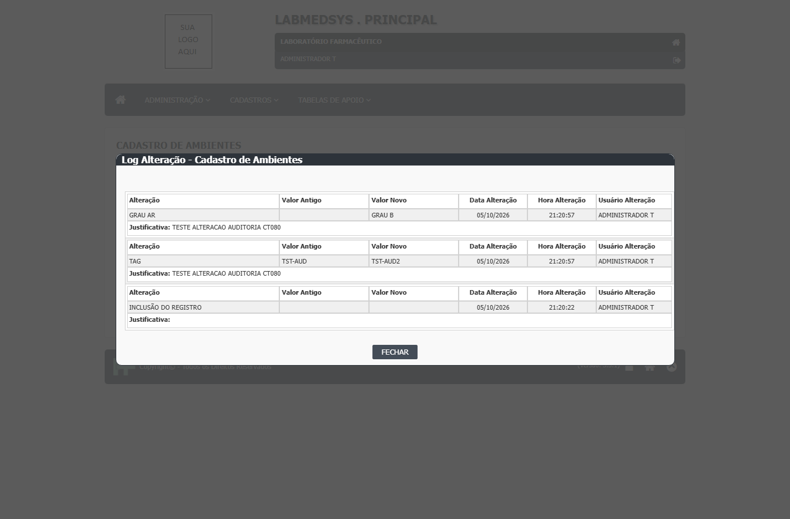
Figura 1: Antes da exclusão: o histórico mostra a inclusão e as alterações de Tag e Grau do Ar com usuário, data, hora e justificativa

Figura 2: Exclusão confirmada ("Exclusão realizada com sucesso!")
Figura 3: Depois: a pesquisa não encontra o ambiente e não há como abrir o histórico dele
Onde está no código
Causa (confirmada): as consultas das listas trazem só registros com LIXEIRA = 0, e o histórico é aberto pelo comando VerLogAlteracao da linha da lista, com o código do registro. Sem a linha, não há como chamar a consulta. Pelo código, o evento de exclusão é gravado no histórico (item "EXCLUSÃO DO REGISTRO", com usuário, mas sem justificativa: ver DV-PRI-009); falta só a tela para lê-lo. Ponto para validar com o DBA: conferir no banco que o item foi gravado para o ambiente excluído.
| Arquivo | Linhas | O que faz |
|---|---|---|
LaboSys_DAL/dalAmbiente.cs |
19-24 | retornaListaAmbiente: só traz registros fora da lixeira (LIXEIRA = 0). |
LaboSys_DAL/dalEquipamento.cs |
18-20 | retornaListaEquipamento: mesmo filtro. |
LaboSys_UI/administrativas/ambiente_lst.aspx.cs |
174, 462-464 | O histórico só é aberto pelo comando da linha (VerLogAlteracao), pelo código do registro. |
LaboSys_DAL/dalLogAlteracaoAmbiente.cs |
118-129 | O evento de exclusão é gravado no histórico; ninguém o consulta. |
Caminhos a partir da pasta app/ do módulo (1.principal/app).
Sugestão de correção
- Acrescentar no filtro Ativo (ou num filtro próprio) a opção Excluídos, que lista os registros da lixeira só para consulta, com o ícone LOG.
- Ou criar uma tela única de consulta do histórico por cadastro e código, que funcione também para registros excluídos.
- Mostrar no histórico o item "EXCLUSÃO DO REGISTRO" com usuário, data, hora e justificativa (depende do DV-PRI-009).
- Restringir essa consulta a quem tem perfil de auditoria ou de Garantia da Qualidade, a definir com a área. Ponto para validar.
- Aplicar a todos os cadastros que usam exclusão lógica.
Como confirmar a correção
Repetir o CT-PRI-080: incluir, alterar dois campos com justificativa e excluir com justificativa. Conferir que o histórico do registro excluído pode ser aberto e mostra os três eventos (inclusão, alteração e exclusão), cada um com usuário, data, hora e, para alteração e exclusão, a justificativa.
Observações
Defeito ligado ao DV-PRI-009: hoje o evento de exclusão não tem motivo nem consulta.
DV-PRI-004
Histórico do Profissional grava a alteração do Cargo sem o valor antigo e o novo, e registra o DDI como alterado sem mudança
| Gravidade | Situação | Tela | Caso de teste | Encontrado em | Norma afetada |
|---|---|---|---|---|---|
| Média | Aberto | Principal › Administração › Profissional (alteração) › Log Alteração | CT-PRI-044 | 05/10/2026 (rodada 1) | RDC 658/2022, art. 125 (toda alteração assinada e datada, com a informação original legível) e art. 124 (atividades rastreáveis) |
O que acontece
Ao alterar o Cargo de um profissional (com justificativa), o histórico registra o item CARGO com usuário, data, hora e justificativa, mas com Valor Antigo e Valor Novo em branco. Foi digitado ANALISTA TESTE e esse valor não aparece. Na mesma gravação, o histórico também registra o item DDI como alterado (de vazio para 55), sem o usuário ter mexido no campo. Quem audita não sabe o que o cargo passou a ser e vê uma alteração que não aconteceu.
Como reproduzir
- Entrar no módulo Principal e abrir Administração › Profissional; pesquisar
TESTE INCLUSAOe clicar no ícone de editar. - No bloco Setor, em Cargo, digitar
ANALISTA TESTE(deixar Setor em SELECIONE). Alterar também telefone e e-mail. - Em Digite sua Justificativa, escrever
TESTE ALTERACAO CT044e clicar em SALVAR. - Na lista, clicar no ícone LOG da linha e ler as duas páginas do histórico.
Dados de teste usados: profissional TESTE INCLUSAO (Cargo ANALISTA TESTE, justificativa TESTE ALTERACAO CT044).
Esperado e obtido
| Esperado | Obtido |
|---|---|
| Item CARGO com Valor Antigo (vazio) e Valor Novo "ANALISTA TESTE". Nenhum item para campos que o usuário não alterou. | Item CARGO com Valor Antigo e Valor Novo em branco. Item DDI com Valor Antigo vazio e Valor Novo 55, sem alteração feita pelo usuário. |
Evidências
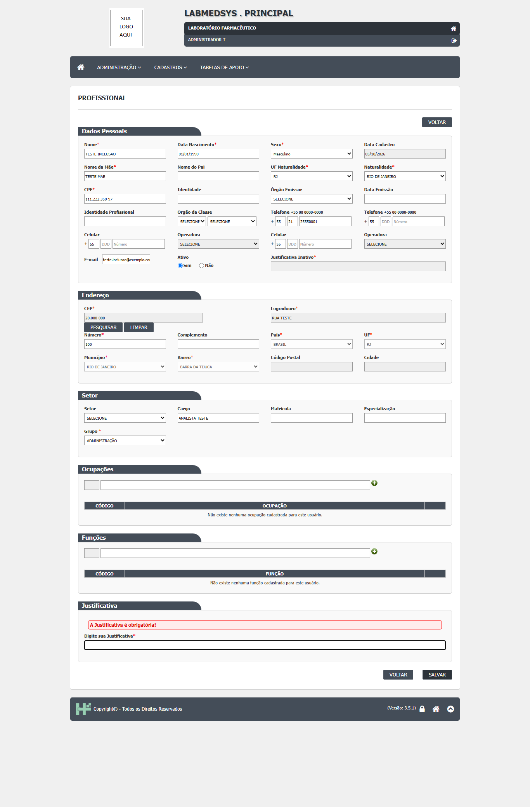
Figura 1: Edição do profissional com Cargo ANALISTA TESTE e Setor em SELECIONE
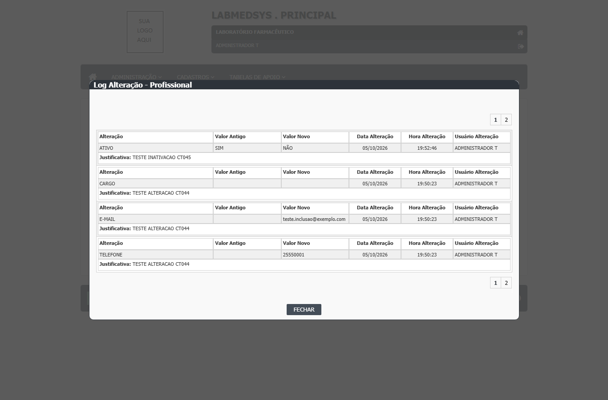
Figura 2: Histórico, página 1: item CARGO com Valor Antigo e Valor Novo em branco
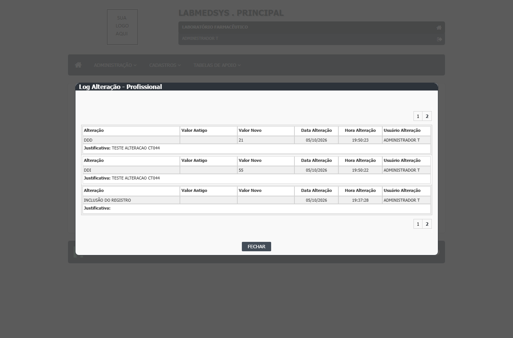
Figura 3: Histórico, página 2: item DDI registrado como alterado (vazio → 55)
Onde está no código
Causa (confirmada): Cargo: a regra detecta corretamente a mudança do Cargo (usuarioNew.Cargo != usuarioOld.Cargo), mas grava como valores o nome da Seção (Secao.NomeLocal), um erro de copiar e colar do bloco anterior. Como o Setor estava em SELECIONE, os dois valores saíram vazios. DDI: a tela preenche o DDI com "55" quando o banco está vazio; ao salvar, o valor antigo (vazio) é comparado com o da tela (55) e a diferença é registrada. A explicação do DDI é provável: falta confirmar com o DBA que o DDI do profissional estava vazio no banco antes da edição.
| Arquivo | Linhas | O que faz |
|---|---|---|
LaboSys_DAL/dalLogAlteracaoUsuario.cs |
491-504 | Log do Cargo: compara o Cargo, mas grava Secao.NomeLocal como valor antigo e novo (linhas 498-499). |
LaboSys_UI/administracao/usuario_ed.aspx.cs |
355, 363 | Na abertura da edição, DDI vazio no banco vira "55" na tela. |
LaboSys_DAL/dalLogAlteracaoUsuario.cs |
220-232 | Log do DDI: registra qualquer diferença entre o banco e a tela, inclusive a criada pelo valor padrão. |
Caminhos a partir da pasta app/ do módulo (1.principal/app).
Sugestão de correção
- No log do Cargo, gravar
usuarioOld.CargoeusuarioNew.Cargocomo valor antigo e novo. - Revisar os outros blocos copiados do mesmo arquivo (Divisão, Seção, Matrícula etc.) para conferir se gravam o campo certo.
- Não aplicar valor padrão de DDI na edição de registro existente, ou gravar o padrão já na inclusão, para que a comparação não acuse mudança falsa.
- Comparar valores normalizados (vazio e nulo iguais; sem espaços) antes de registrar uma alteração.
Como confirmar a correção
Repetir o CT-PRI-044: alterar o Cargo de TESTE INCLUSAO com justificativa e conferir no histórico o item CARGO com o valor antigo e o novo. Conferir que não aparece item de DDI (nem de outro campo) que não foi alterado.
DV-PRI-006
Profissional com conta de usuário e perfil é excluído sem aviso de dependência
| Gravidade | Situação | Tela | Caso de teste | Encontrado em | Norma afetada |
|---|---|---|---|---|---|
| Média | Aberto | Principal › Administração › Profissional › Excluir | CT-PRI-048 | 05/10/2026 (rodada 1) | RDC 658/2022, art. 124 (atividades rastreáveis a quem as executou) e art. 125 (registros legíveis ao longo do tempo) |
O que acontece
O sistema excluiu o profissional TESTE CADASTRO, que tinha conta de usuário com perfil, sem avisar que havia uma conta ligada a ele. A regra RN-PRI-051 espera que a exclusão seja recusada, dizendo qual dependência impede, ou ao menos que o usuário seja avisado. Os registros criados por um profissional precisam continuar ligados a uma pessoa identificável. O caso de um profissional que já criou registros no sistema não foi reproduzido: esse usuário de teste nunca entrou no sistema.
Como reproduzir
- Entrar no módulo Principal e abrir Administração › Profissional.
- Pesquisar
TESTE CADASTRO(profissional que tem conta em Administração › Conta usuário, com perfil TESTECADASTRO) e clicar no ícone de excluir. - Na tela Exclusão, preencher Justificativa
TESTE EXCLUSAO COM HISTORICO CT048e clicar em EXCLUIR; confirmar. - Pesquisar
TESTE CADASTROde novo.
Dados de teste usados: profissional TESTE CADASTRO com conta e perfil TESTECADASTRO, excluído no CT-PRI-048 e recriado depois para os demais testes.
Esperado e obtido
| Esperado | Obtido |
|---|---|
| Recusar a exclusão, dizendo que há uma conta de usuário e um perfil ligados ao profissional (ou exigir que a conta seja desativada antes), conforme RN-PRI-051. | Exclusão realizada; a pesquisa por TESTE CADASTRO volta "A pesquisa não retornou nenhum resultado." Nenhum aviso sobre a conta. |
Evidências
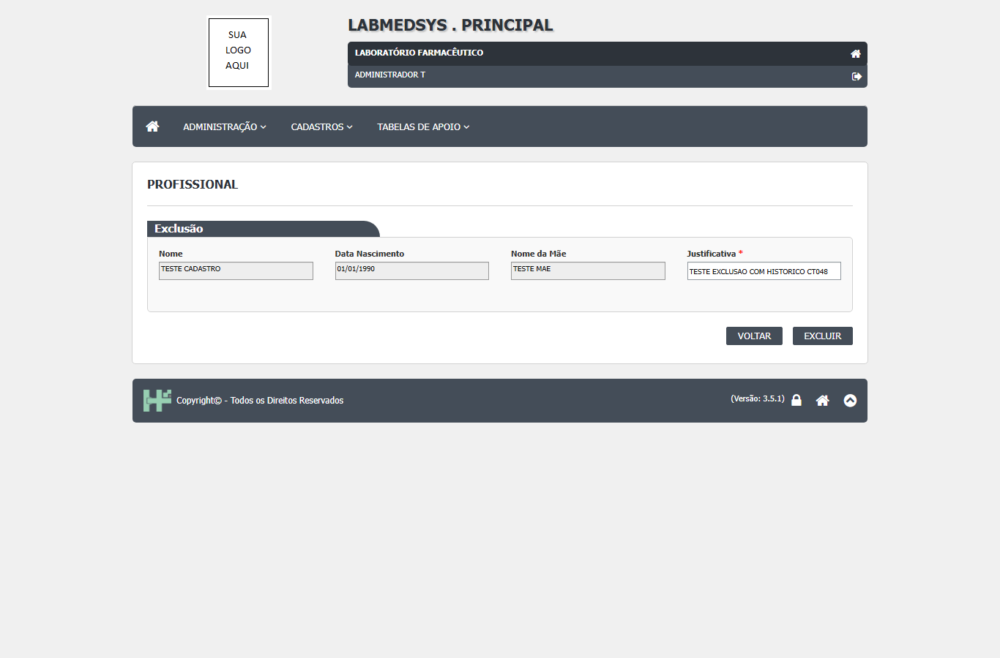
Figura 1: Tela de exclusão do profissional TESTE CADASTRO, com justificativa
Figura 2: Depois de excluir: o profissional não aparece mais, sem aviso sobre a conta
Onde está no código
Causa (confirmada): a exclusão confere dependências pela procedure pPossoExcluir, que só enxerga outras tabelas com chave estrangeira para SIS_USUARIO. A conta (login e validade) fica na mesma linha do profissional em SIS_USUARIO, e a tabela de perfis do usuário (SIS_USUARIO_PERFIL) não tem chave estrangeira para SIS_USUARIO. Assim, nem a conta nem o perfil contam como dependência. Que um profissional que já criou registros seja recusado é provável (os campos de usuário de criação têm chave estrangeira), mas não foi testado.
| Arquivo | Linhas | O que faz |
|---|---|---|
LaboSys_DAL/dalUsuario.cs |
1213-1255 | excluirUsuario: usa PossoExcluir("SIS_USUARIO") e, se livre, marca a lixeira com a justificativa. |
Hsolutions.Principal.DB/Tables/SIS_USUARIO.sql |
3, 9-10 | Login e validade da conta ficam na própria linha do profissional, invisíveis para a conferência de dependências. |
Hsolutions.Principal.DB/Tables/SIS_USUARIO_PERFIL.sql |
1-9 | Perfis do usuário sem chave estrangeira para SIS_USUARIO (só para SIS_PERFIL). |
Caminhos a partir da pasta app/ do módulo (1.principal/app).
Sugestão de correção
- Antes de excluir, conferir explicitamente se o profissional tem conta (login preenchido) ou perfis em
SIS_USUARIO_PERFIL, e recusar com uma mensagem clara: "O profissional possui conta de usuário. Desative a conta antes de excluir." (regra a confirmar com a área). - Acrescentar a chave estrangeira de
SIS_USUARIO_PERFIL.ID_USUARIOparaSIS_USUARIO. - Preferir inativar a excluir quando o profissional já tiver registros no sistema, preservando o vínculo entre registros e autor.
- Usar a mensagem detalhada de dependências proposta no DV-PRI-011.
Como confirmar a correção
Repetir o CT-PRI-048 com um profissional TESTE que tenha conta e perfil: a exclusão deve ser recusada com a dependência informada. Repetir também com um profissional TESTE que já tenha incluído registros (exige entrar no sistema com esse usuário e gravar algo).
Observações
Ponto para validar: com o profissional inativo, o campo de justificativa da exclusão aparece desabilitado (registrado na rodada 1, não analisado no código).
DV-PRI-010
Salvar um equipamento sem Categoria dá erro de servidor e a tela fica parada, sem mensagem
| Gravidade | Situação | Tela | Caso de teste | Encontrado em | Norma afetada |
|---|---|---|---|---|---|
| Média | Aberto | Principal › Cadastros › Cadastro de Equipamentos (inclusão) | CT-PRI-090 (Equipamento) | 05/10/2026 (rodada 1) | — |
O que acontece
O campo Categoria não aparece como obrigatório (não tem asterisco nem validação). Se o usuário preenche todos os campos obrigatórios e deixa a Categoria em SELECIONE, ao salvar o servidor devolve o erro "Input string was not in a correct format" e a tela fica parada, sem nenhuma mensagem para o usuário. O equipamento não é gravado. Com uma Categoria escolhida (e mesmo sem fabricante e fornecedor), grava normalmente.
Como reproduzir
- Entrar no módulo Principal e abrir Cadastros › Cadastro de Equipamentos; clicar em Incluir.
- Preencher só os obrigatórios: Tipo de Equipamento Móvel, Ativo Sim, Descrição
TESTE EQUIPAMENTO MIN, TagTST-EQ-MIN, Capacidade de Produção100 COMPRIMIDOS POR HORA, Valor1.500,00. - Deixar Categoria em SELECIONE (e Fabricante e Fornecedor em SELECIONE).
- Clicar em SALVAR e confirmar.
Dados de teste usados: equipamento TESTE EQUIPAMENTO MIN (tag TST-EQ-MIN), não gravado por causa do erro.
Esperado e obtido
| Esperado | Obtido |
|---|---|
| Ou o equipamento é gravado sem categoria, ou a tela recusa com uma mensagem clara (por exemplo, "A Categoria é obrigatória!") e o campo marcado como obrigatório. | Erro de servidor "Input string was not in a correct format"; a tela fica parada, sem mensagem, e o equipamento não é gravado. |
Evidências
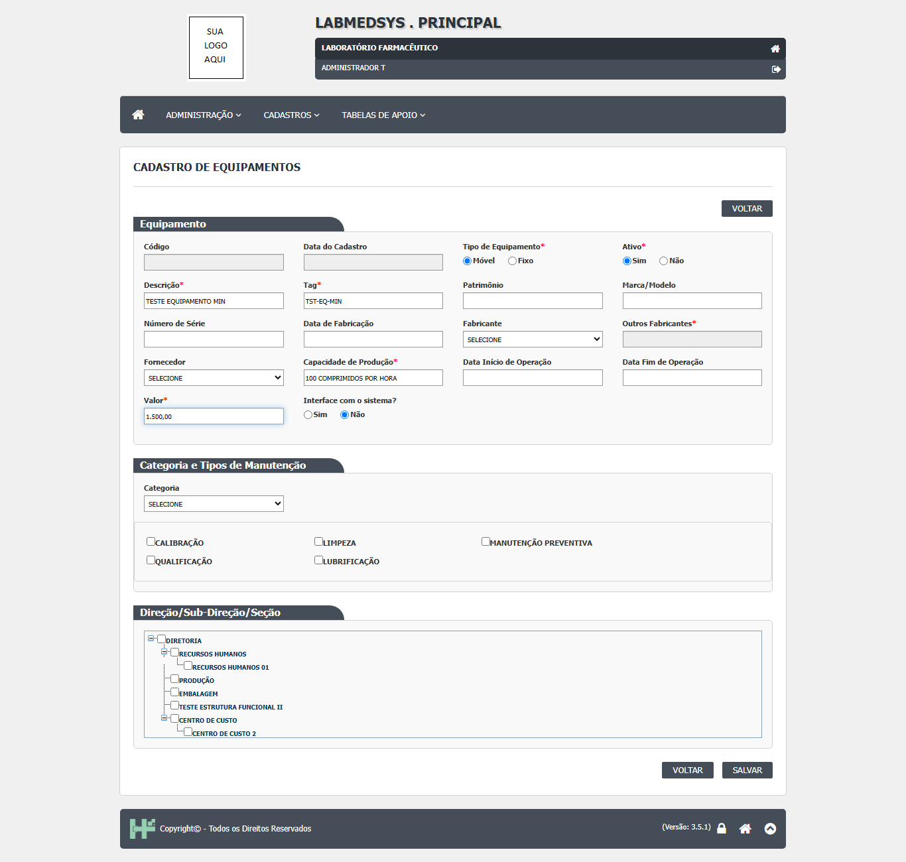
Figura 1: Obrigatórios preenchidos e Categoria em SELECIONE, antes de salvar (o campo não tem asterisco)
Onde está no código
Causa (confirmada): a lista de categorias tem a primeira opção SELECIONE com valor vazio. Ao salvar, o código converte esse valor para número com Convert.ToInt32(ddlCategoria.SelectedValue) sem conferir se está vazio; a conversão de texto vazio lança exatamente "Input string was not in a correct format". Essa linha fica fora do try/catch que trata os erros da inclusão, por isso o erro não vira mensagem na tela. Não há validador para a Categoria na página.
| Arquivo | Linhas | O que faz |
|---|---|---|
LaboSys_UI/administrativas/equipamento_ed.aspx.cs |
76 | CarregaCategorias: insere a opção "SELECIONE" com valor vazio. |
LaboSys_UI/administrativas/equipamento_ed.aspx.cs |
286-287 | salvar(): converte a Categoria para inteiro sem conferir valor vazio, antes e fora do try/catch (que começa na linha 319). |
LaboSys_UI/administrativas/equipamento_ed.aspx |
203-205 | Campo Categoria sem asterisco e sem validador (RequiredFieldValidator). |
Caminhos a partir da pasta app/ do módulo (1.principal/app).
Sugestão de correção
- Decidir com a área se a Categoria é obrigatória. Ponto para validar.
- Se for obrigatória: marcar o campo com asterisco, acrescentar validador no grupo "Equipamento" e conferir também no servidor, com a mensagem "A Categoria é obrigatória!".
- Se não for: tratar o valor vazio como "sem categoria" (nulo) em vez de converter, e gravar o equipamento.
- Trazer a montagem do objeto para dentro do
try/catch, para que qualquer erro apareça como mensagem ao usuário e não deixe a tela parada.
Como confirmar a correção
Repetir o CT-PRI-090 de Equipamento só com os obrigatórios e a Categoria em SELECIONE. Conferir: ou grava (e aparece na lista com histórico de inclusão), ou recusa com mensagem clara. Repetir também com Categoria escolhida, que deve continuar gravando.
Observações
Ponto para validar (só pelo código, não testado): na edição de um equipamento sem categoria, a linha 112 do mesmo arquivo tenta selecionar o valor "0", que não existe na lista (a opção vazia tem valor ""). Vale conferir se abrir para edição um equipamento antigo sem categoria também dá erro. Da mesma forma, ddlCategoria_SelectedIndexChanged (linha 438) converte o valor sem conferir: voltar a Categoria para SELECIONE depois de escolher uma pode dar o mesmo erro.
DV-PRI-011
Exclusão recusada com mensagem genérica, sem dizer qual cadastro ou item impede
| Gravidade | Situação | Tela | Caso de teste | Encontrado em | Norma afetada |
|---|---|---|---|---|---|
| Média | Aberto | Principal › Cadastros › Cadastro de Ambientes (e Cadastro de Equipamentos) › Excluir | CT-PRI-095 (Ambiente) e CT-PRI-094 (Equipamento) | 05/10/2026 (rodada 1; reteste do equipamento na rodada 2) | — |
O que acontece
Quando um registro não pode ser excluído porque outro depende dele, o sistema recusa (correto), mas sempre com a mesma frase: "Exclusão inválida, existem referências com outras tabelas." O usuário não sabe o que impede a exclusão. Exemplos: um ambiente usado num Ponto de água; um equipamento recém-criado que tinha o tipo "Manutenção preventiva" marcado na própria tela. No segundo caso, a equipe só descobriu o motivo removendo item por item (o defeito DV-PRI-012 foi aberto por engano por causa disso e depois encerrado).
Como reproduzir
- Entrar no módulo Principal e abrir Cadastros › Cadastro de Ambientes; incluir o ambiente
TESTE AMBIENTE DEPENDENTE. - Abrir Cadastros › Cadastro de Pontos de Água, incluir o ponto
TESTE PONTO AGUA DEPe escolher esse ambiente. - Voltar ao Cadastro de Ambientes, pesquisar
TESTE AMBIENTE DEPENDENTEe clicar no ícone de excluir da linha; confirmar. - Para o equipamento: em Cadastros › Cadastro de Equipamentos, incluir um equipamento com uma Categoria (o tipo de manutenção da categoria vem marcado), salvar e tentar excluir pela lista.
Dados de teste usados: ambiente TESTE AMBIENTE DEPENDENTE (código 18) ligado ao ponto de água TESTE PONTO AGUA DEP; equipamento TESTE EQUIPAMENTO EXCLUIR (código 10, tag TST-EQ-EX, categoria CAT EQUIP), excluído no reteste da rodada 2 depois de desmarcar a manutenção.
Esperado e obtido
| Esperado | Obtido |
|---|---|
| Recusar a exclusão dizendo qual dependência impede, por exemplo "Este ambiente está ligado ao ponto de água TESTE PONTO AGUA DEP" ou "Desmarque os tipos de manutenção do equipamento antes de excluir" (RF-PRI-041, RN-PRI-051 e RN-PRI-071). | "Exclusão inválida, existem referências com outras tabelas." nos dois casos. O registro continua na lista. |
Evidências
Figura 1: Depois da recusa genérica, o ambiente continua na lista; nada diz que o impedimento é o ponto de água
Figura 2: Equipamento recém-criado continua na lista depois da mesma mensagem genérica
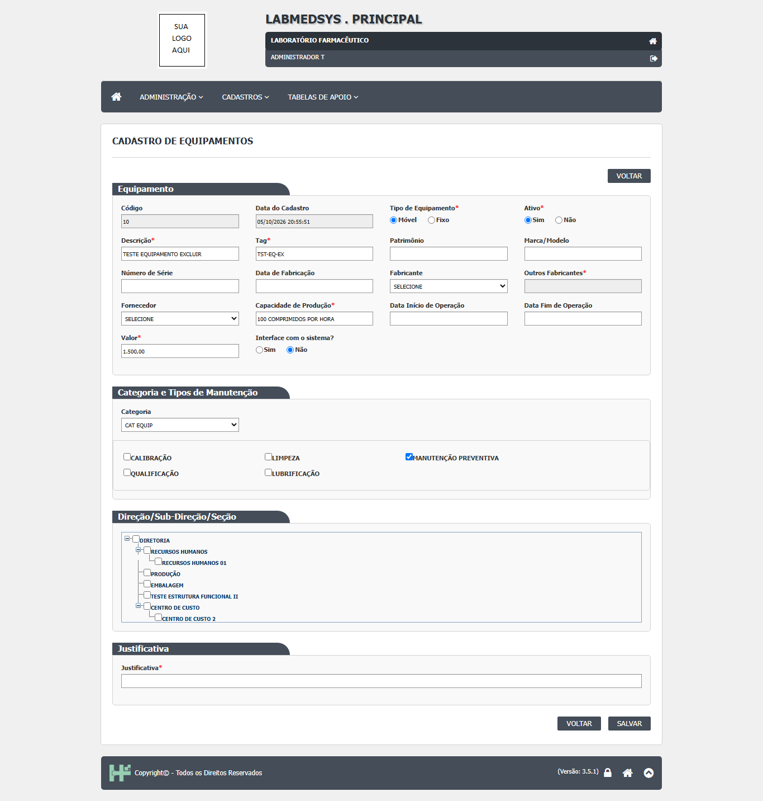
Figura 3: Reteste: o que impedia era o tipo MANUTENÇÃO PREVENTIVA marcado na própria tela do equipamento
Onde está no código
Causa (confirmada): a conferência de dependências é feita pela procedure pPossoExcluir, que percorre todas as tabelas com chave estrangeira para o registro e sabe qual tabela tem dependentes, mas devolve só verdadeiro/falso. O método PossoExcluir do BD.cs repassa só esse booleano, e a regra de negócio monta sempre a mesma mensagem fixa. A mesma frase está copiada em pelo menos 12 classes de regra (bllMoeda, bllPontoAgua, bllUtensilio, bllInstrumento etc.). Que o tipo de manutenção marcado bloqueia o equipamento é provável pela estrutura (tabela TBL_EQUIPAMENTO_TIPO_MANUTENCAO ligada ao equipamento) e foi confirmado no reteste da rodada 2.
| Arquivo | Linhas | O que faz |
|---|---|---|
LaboSys_BLL/bllAmbiente.cs |
168-178 | excluirAmbiente: se possoExcluir for falso, lança a mensagem genérica. |
LaboSys_BLL/bllEquipamento.cs |
178-187 | excluirEquipamento: mesma mensagem genérica. |
LaboSys_DAL/BD.cs |
264-299 | PossoExcluir(tabela, id): chama a procedure e devolve só verdadeiro/falso. |
Hsolutions.Principal.DB/Stored Procedures/pPossoExcluir.sql |
63-91 | Percorre as tabelas dependentes (variável @TABELA_FK), para na primeira com registros e devolve só o bit @RETORNO. |
LaboSys_DAL/dalLocal.cs |
421-450 | Exemplo do próprio sistema que já faz certo: a Estrutura funcional monta a mensagem dizendo o que impede (filhas, usuários, ambientes). |
Caminhos a partir da pasta app/ do módulo (1.principal/app).
Sugestão de correção
- Fazer a procedure devolver a lista de tabelas com dependentes (e quantos registros), não só verdadeiro/falso.
- Traduzir o nome técnico da tabela para o nome do cadastro que o usuário conhece (por exemplo,
TBL_PONTO_AGUA→ "Ponto de água"), numa tabela de tradução única. - Quando o impedimento for um item da própria tela (tipos de manutenção, equipamentos, utilidades e instrumentos do ambiente), orientar: "Remova os itens vinculados nesta tela antes de excluir" (RN-PRI-071).
- Centralizar a mensagem num só lugar, em vez da frase copiada em cada classe de regra, para corrigir todos os cadastros de uma vez.
- Seguir o padrão já usado em
dalLocal.PossoExcluir, que diz o motivo.
Como confirmar a correção
Repetir o CT-PRI-095 de Ambiente (ambiente ligado a ponto de água) e o CT-PRI-094 de Equipamento com um tipo de manutenção marcado. Conferir que a mensagem diz qual cadastro ou item impede e que o registro continua na lista. Depois de remover o dependente, a exclusão deve ser liberada.
Observações
Já registrado como requisito corrigido RF-PRI-041. Ponto para validar: no reteste, o equipamento já tinha "Manutenção preventiva" marcada sem que a equipe a tivesse marcado; pelo código, ao escolher a Categoria a tela marca os tipos de manutenção da categoria (equipamento_ed.aspx.cs, linhas 394-450: checkTipoManutencao e ddlCategoria_SelectedIndexChanged). Isso surpreende o usuário e deveria ser avisado na tela.
DV-PRI-013
Alteração e inativação de Pessoa Jurídica gravam sem pedir justificativa
| Gravidade | Situação | Tela | Caso de teste | Encontrado em | Norma afetada |
|---|---|---|---|---|---|
| Média | Aberto | Principal › Cadastros › Pessoa Jurídica (alteração e inativação) › Log Alteração | CT-PRI-092 e CT-PRI-093 (Pessoa jurídica) | 05/10/2026 (rodada 1) | RDC 658/2022, art. 125 e parágrafo único (alteração assinada e datada; motivo registrado) e art. 124 (atividades rastreáveis) |
O que acontece
A tela de Pessoa Jurídica não tem campo de justificativa. Alterar dados (Nome Fantasia, Inscrição Estadual) ou mudar Ativo para Não grava direto. O histórico registra o campo, o dado antigo, o dado novo, a data, a hora e o usuário, mas não o motivo. Em Ambiente e Equipamento a alteração exige justificativa; a área decidiu que toda alteração e exclusão de cadastro deve exigir (RN-PRI-070). Pessoa jurídica alimenta fabricantes e fornecedores.
Como reproduzir
- Entrar no módulo Principal e abrir Cadastros › Pessoa Jurídica; pesquisar
TESTE PJe clicar no ícone de editar daTESTE PJ FARMACÊUTICA LTDA. - Alterar Nome Fantasia para
TESTE PJ FANTASIA ALTERADAe Inscrição Estadual para111222333; clicar em SALVAR (não há campo de justificativa). - Na lista, clicar no ícone LOG da linha.
- Editar de novo, marcar Ativo Não e clicar em SALVAR.
Dados de teste usados: pessoa jurídica TESTE PJ FARMACÊUTICA LTDA (código 24), alterada e inativada.
Esperado e obtido
| Esperado | Obtido |
|---|---|
| Pedir justificativa obrigatória na alteração e na inativação ("A Justificativa é obrigatória!" se vazia) e mostrá-la no histórico, como em Ambiente e Equipamento. | Grava sem pedir justificativa. O histórico (colunas Item, Dado Antigo, Dado Novo, Data Alteração, Hora Alteração, Usuário) não mostra justificativa. |
Evidências
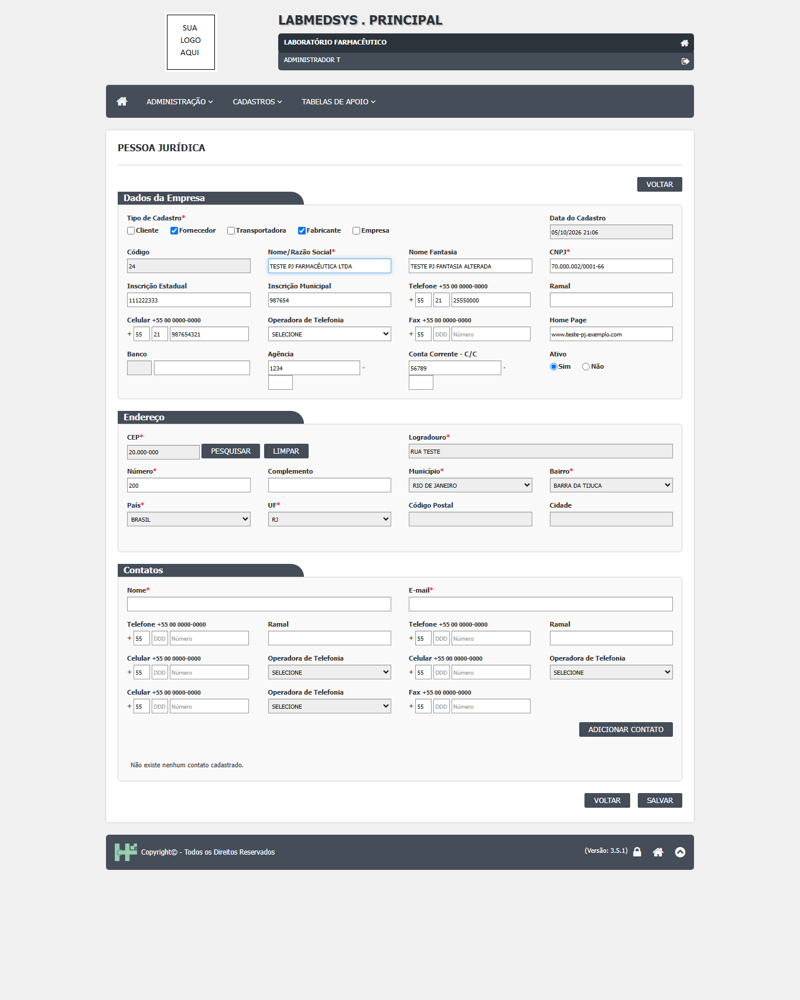
Figura 1: Edição da pessoa jurídica: não existe campo de justificativa na tela
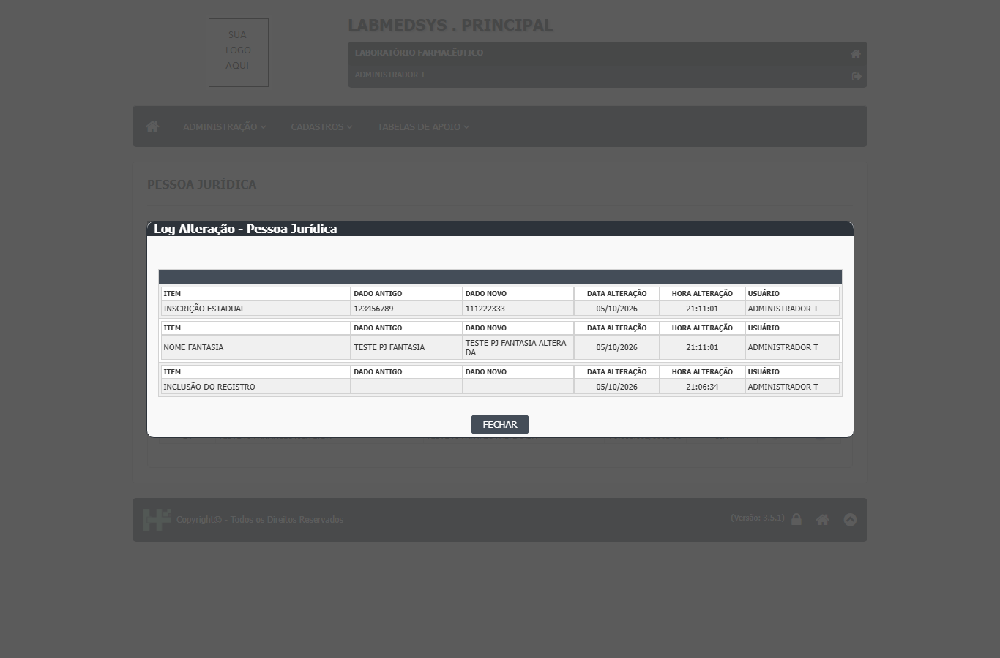
Figura 2: Histórico das alterações sem justificativa
Figura 3: Inativação (Ativo = Não) também sem campo de justificativa
Onde está no código
Causa (confirmada): a justificativa de inativação foi desligada no código (a linha que a lia está comentada e o valor é fixado como vazio) e a tela não tem campo para ela. Na gravação do histórico, todos os itens recebem justificativa = "", fixo, em 32 pontos do mesmo arquivo.
| Arquivo | Linhas | O que faz |
|---|---|---|
LaboSys_UI/administrativas/pessoa_juridica_ed.aspx.cs |
817 | justificativaInativo fixada em ""; a leitura do campo de tela está comentada. |
LaboSys_UI/administrativas/pessoa_juridica_ed.aspx.cs |
239 | Carga da justificativa de inativação comentada. |
LaboSys_DAL/dalLogAlteracaoPJ.cs |
14-32 | gerarLogAlteracaoPJ: cada item do histórico recebe justificativa vazia (padrão repetido no arquivo todo). |
Caminhos a partir da pasta app/ do módulo (1.principal/app).
Sugestão de correção
- Acrescentar à tela um bloco Justificativa obrigatório na alteração (como em Ambiente e Equipamento) e exigi-lo também na inativação.
- Passar a justificativa até
gerarLogAlteracaoPJe gravá-la em cada item do histórico, em vez de"". - Conferir a obrigatoriedade no servidor.
- Mostrar a justificativa no histórico da Pessoa Jurídica e padronizar os cabeçalhos com os dos outros cadastros (Alteração, Valor Antigo, Valor Novo, Data, Hora, Usuário).
Como confirmar a correção
Repetir o CT-PRI-092 e o CT-PRI-093 de Pessoa jurídica com TESTE PJ FARMACÊUTICA LTDA: sem justificativa deve recusar; com justificativa deve gravar, e o histórico deve mostrar cada campo alterado com a justificativa. O mesmo vale para a inativação.
Observações
Pessoa jurídica não tem a função Excluir (só inativação), por isso só a alteração e a inativação estão neste defeito.
DV-PRI-007
Cadastro de Ambientes aceita duas descrições iguais
| Gravidade | Situação | Tela | Caso de teste | Encontrado em | Norma afetada |
|---|---|---|---|---|---|
| Baixa | Aberto | Principal › Cadastros › Cadastro de Ambientes (inclusão) | CT-PRI-091 (Ambiente) | 05/10/2026 (rodada 1) | — |
O que acontece
O sistema gravou dois ambientes com a mesma descrição, TESTE AMBIENTE LABORATÓRIO (códigos 14 e 15). A Tag é conferida contra repetição, mas a Descrição não. Nas listas de escolha dos outros cadastros (Ponto de água, por exemplo) os dois aparecem com o mesmo nome e o usuário não sabe qual escolher. A regra (pode ou não repetir) ainda precisa ser definida pela área.
Como reproduzir
- Entrar no módulo Principal e abrir Cadastros › Cadastro de Ambientes; clicar em Incluir.
- Em Descrição, digitar
TESTE AMBIENTE LABORATÓRIO, deixar Ativo Sim e clicar em SALVAR. - Clicar em Incluir de novo, digitar a mesma Descrição e clicar em SALVAR.
- Pesquisar
TESTE AMBIENTEe clicar em IMPRIMIR.
Dados de teste usados: ambientes TESTE AMBIENTE LABORATÓRIO códigos 14 e 15.
Esperado e obtido
| Esperado | Obtido |
|---|---|
| Recusar a segunda inclusão com uma mensagem como "Descrição já cadastrada!" (a regra precisa ser confirmada pela área; ver observações). | "Inclusão realizada com sucesso!" nas duas vezes; a lista e o relatório mostram dois ambientes com a mesma descrição. |
Evidências
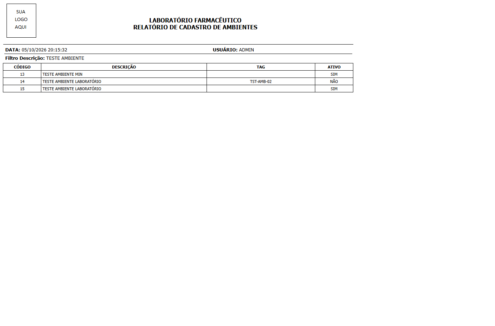
Figura 1: Relatório com os códigos 14 e 15, ambos TESTE AMBIENTE LABORATÓRIO
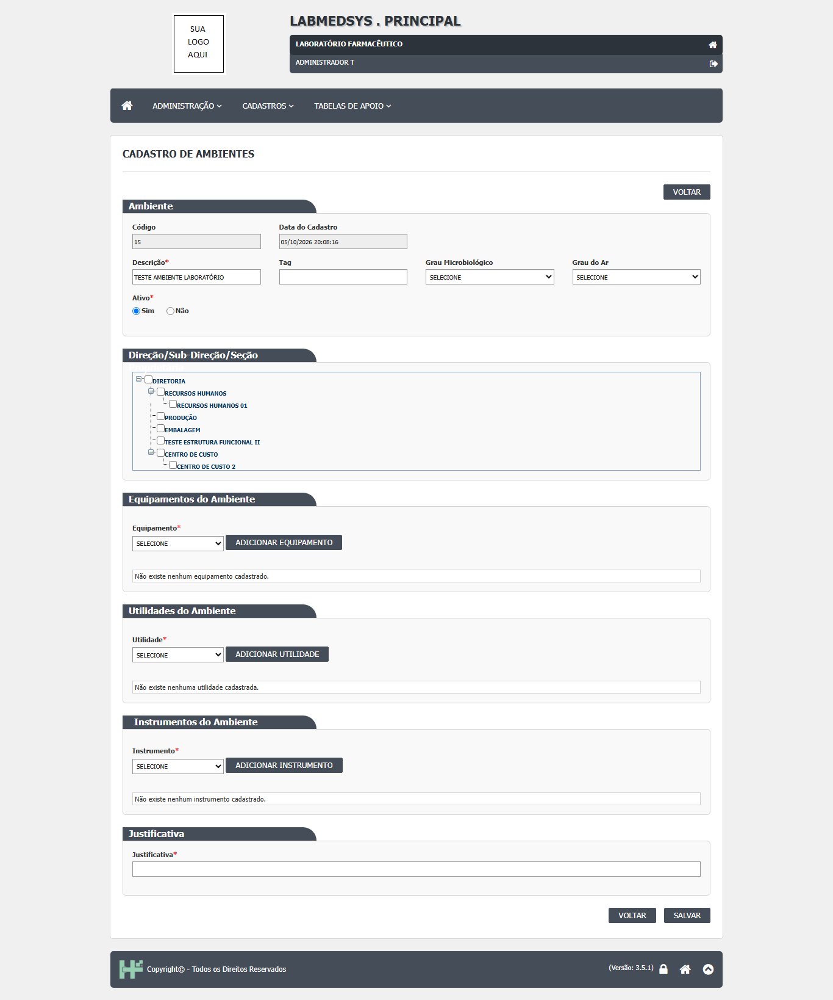
Figura 2: O segundo ambiente (código 15) gravado com a mesma descrição
Onde está no código
Causa (confirmada): na inclusão, a regra só confere se a Tag já existe (validaTag); não há conferência da Descrição. A tabela TBL_AMBIENTE também não tem índice único na coluna DESCRICAO.
| Arquivo | Linhas | O que faz |
|---|---|---|
LaboSys_BLL/bllAmbiente.cs |
104-118 | incluirAmbiente: confere só a Tag ("Tag já existe!") e grava. |
Hsolutions.Principal.DB/Tables/TBL_AMBIENTE.sql |
1-23 | DESCRICAO sem restrição de unicidade. |
Caminhos a partir da pasta app/ do módulo (1.principal/app).
Sugestão de correção
- Confirmar com a área se a descrição do ambiente deve ser única. Ponto para validar.
- Se for: conferir a Descrição na inclusão e na alteração, ignorando maiúsculas, acentos e espaços extras, e só entre registros fora da lixeira; mensagem "Descrição já cadastrada!".
- Acrescentar no banco um índice único filtrado (
LIXEIRA = 0) para garantir a regra mesmo fora da tela. - Se a repetição for permitida: mostrar a Tag ao lado da descrição nas listas de escolha, para o usuário distinguir os ambientes.
Como confirmar a correção
Repetir o CT-PRI-091 de Ambiente: incluir duas vezes a mesma Descrição. Conferir a recusa (ou, se a área decidir que pode repetir, conferir que as listas de escolha distinguem os dois). Testar também com diferença só de acento ou de maiúsculas.
Observações
Ponto para validar com a área: a regra de unicidade não está definida (o resultado da rodada registra "regra a definir"). Os mesmos cadastros de apoio de outros módulos podem ter o mesmo comportamento; não foi verificado.
DV-PRI-008
Pesquisa por nome não ignora acentos nos cadastros de Ambiente, Equipamento e Pessoa jurídica
| Gravidade | Situação | Tela | Caso de teste | Encontrado em | Norma afetada |
|---|---|---|---|---|---|
| Baixa | Aberto | Principal › Cadastros › Cadastro de Ambientes, Cadastro de Equipamentos e Pessoa Jurídica (pesquisa) | CT-PRI-096 (Ambiente, Equipamento e Pessoa jurídica) | 05/10/2026 (rodada 1) | — |
O que acontece
A pesquisa encontra por parte do nome e não se importa com maiúsculas e minúsculas, mas não acha o registro quando o texto é digitado sem acento: "laboratorio" não encontra "LABORATÓRIO", "pressao" não encontra "PRESSÃO" e "farmaceutica" não encontra "FARMACÊUTICA". Quem digita sem acento conclui que o registro não existe e pode cadastrá-lo de novo.
Como reproduzir
- Entrar no módulo Principal e abrir Cadastros › Cadastro de Ambientes.
- Em Descrição, digitar
laboratorio(sem acento), deixar Ativo em TODAS e clicar em PESQUISAR. - Repetir com
laboratório(com acento) para comparar. - Fazer o mesmo em Cadastro de Equipamentos com
pressaoe em Pessoa Jurídica (campo Nome/Razão Social) comfarmaceutica.
Dados de teste usados: ambientes TESTE AMBIENTE LABORATÓRIO; equipamento TESTE com PRESSÃO na descrição; pessoa jurídica TESTE com FARMACÊUTICA na razão social (rodada 1).
Esperado e obtido
| Esperado | Obtido |
|---|---|
| Encontrar o registro com ou sem acento, como já acontece com maiúsculas e minúsculas (CT-PRI-096). | "A pesquisa não retornou nenhum resultado." com o texto sem acento; com acento, encontra. |
Evidências
Figura 1: Ambientes: "laboratorio" sem acento não encontra nada
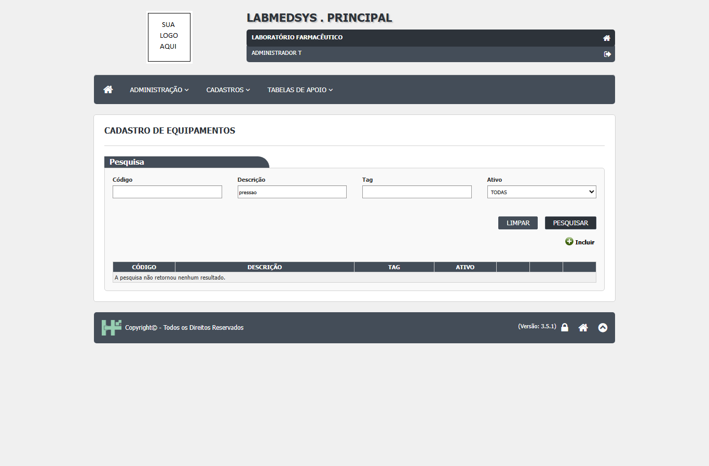
Figura 2: Equipamentos: "pressao" sem acento não encontra nada
Onde está no código
Causa (confirmada): o banco usa o padrão de ordenação Latin1_General_CI_AS: CI (ignora maiúsculas) mas AS (diferencia acentos). As consultas das listas comparam a descrição com LIKE sem mudar esse padrão, então "laboratorio" e "LABORATÓRIO" são textos diferentes. Existe no banco uma função TIRA_ACENTO, mas ela só troca o padrão para outro que também diferencia acentos (..._CS_AS) e não é usada nessas pesquisas. As listas chamam retornaListaAmbiente e retornaListaEquipamento (camada de dados) e a consulta equivalente de Pessoa jurídica em dalPJ.cs.
| Arquivo | Linhas | O que faz |
|---|---|---|
Hsolutions.Principal.DB/Hsolutions.Principal.DB.sqlproj |
31 | Padrão do banco Latin1_General_CI_AS (diferencia acentos). |
Hsolutions.Principal.DB/Functions/TIRA_ACENTO.sql |
9 | Função com nome enganoso: aplica um padrão que também diferencia acentos; não remove acento. |
LaboSys_UI/administrativas/ambiente_lst.aspx.cs |
37 | A pesquisa da tela chama retornaListaAmbiente (dalAmbiente.cs) com o texto digitado. |
LaboSys_UI/administrativas/equipamento_lst.aspx.cs |
39 | A pesquisa da tela chama retornaListaEquipamento (dalEquipamento.cs). |
Caminhos a partir da pasta app/ do módulo (1.principal/app).
Sugestão de correção
- Nas consultas das pesquisas, comparar com um padrão que ignore acentos, por exemplo
DESCRICAO COLLATE Latin1_General_CI_AI LIKE .... - Ou corrigir a função
TIRA_ACENTOpara usar um padrão_AIe aplicá-la dos dois lados da comparação. - Fazer a correção num ponto comum para valer em todas as pesquisas do sistema (Ambiente, Equipamento, Pessoa jurídica e os demais cadastros), e não tela por tela.
- Conferir que a pesquisa por CNPJ e por código continua igual.
Como confirmar a correção
Repetir o CT-PRI-096 nos três cadastros: pesquisar laboratorio, pressao e farmaceutica sem acento e conferir que os registros aparecem; repetir com acento e com caixa mista, que já funcionavam.
Observações
Na Pessoa jurídica, a pesquisa "farmaceutica" trouxe só as empresas gravadas sem acento; a TESTE com FARMACÊUTICA não apareceu (captura CT-PRI-096-pj-passo-1.png, não anexada por mostrar CNPJs de empresas).
DV-PRI-018
Na tela inicial, o link do módulo Patrimônio aponta para o próprio servidor e não abre para o usuário
| Gravidade | Situação | Tela | Caso de teste | Encontrado em | Norma afetada |
|---|---|---|---|---|---|
| Baixa | Aberto | Principal › Tela inicial (lista de módulos) › Patrimônio | achado ao abrir os módulos (seção 6.2 do plano) | 05/10/2026 (rodada 2) | — |
O que acontece
Na tela inicial, ao clicar no módulo Patrimônio, o navegador tenta abrir um endereço localhost (o próprio computador do usuário) e a conexão é recusada. Todos os outros módulos habilitados (Produção, Estoque, Controle da Qualidade, Comercial, Controle de Documentos, Configurador OPE, Garantia da Qualidade e Rastreabilidade) abrem normalmente.
Como reproduzir
- Entrar no módulo Principal com um usuário que tenha acesso aos módulos.
- Na tela inicial, clicar no ícone do módulo Patrimônio.
Dados de teste usados: usuário administrador do ambiente de teste; nenhum dado criado.
Esperado e obtido
| Esperado | Obtido |
|---|---|
| Abrir o módulo Patrimônio, como os demais; ou, se o módulo não fizer parte do sistema entregue, não mostrar o ícone. | O navegador tenta abrir um endereço localhost e mostra conexão recusada. |
| ### Onde está no código |
Causa (provável): os links dos módulos vêm da tabela SIS_MODULO, coluna LINK. O script de carga do banco grava todos os módulos com endereço localhost; no ambiente de teste os outros módulos foram ajustados, mas a linha do Patrimônio ficou com o valor original e com HABILITADO = 1. A montagem da lista de módulos fica numa biblioteca compartilhada (fora de 1.principal/app), não conferida. Investigar: o valor de SIS_MODULO.LINK para CHAVE = 'PATRIMONIO' no banco de teste (pedir ao DBA).
| Arquivo | Linhas | O que faz |
|---|---|---|
Hsolutions.Principal.DB/dml.sql |
10321 | Carga inicial do módulo PATRIMONIO em SIS_MODULO, habilitado e com link localhost (os demais módulos também nascem assim e precisam ser ajustados na instalação). |
Caminhos a partir da pasta app/ do módulo (1.principal/app).
Sugestão de correção
- Confirmar se o módulo Patrimônio faz parte do sistema. Ponto para validar: entre as pastas entregues não há aplicação web do Patrimônio, só bibliotecas em
10.HSolution.Library. - Se não fizer parte: gravar
HABILITADO = 0para o Patrimônio, para o ícone sumir. - Se fizer: corrigir o
LINKno ambiente com o endereço publicado. - Incluir no roteiro de instalação a conferência dos links de todos os módulos e não usar
localhostno script de carga.
Como confirmar a correção
Entrar no Principal, clicar em cada módulo da tela inicial e conferir que todos abrem; o Patrimônio deve abrir ou não aparecer.